WOLFGANG
LAIMER
Work
About
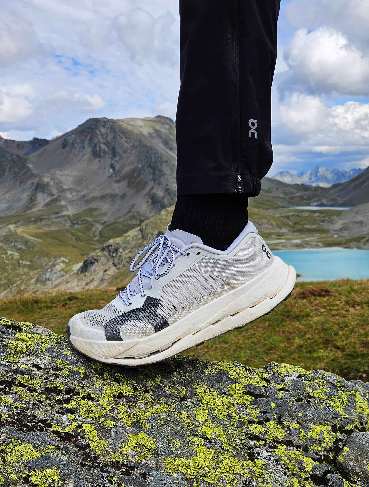
On
Running
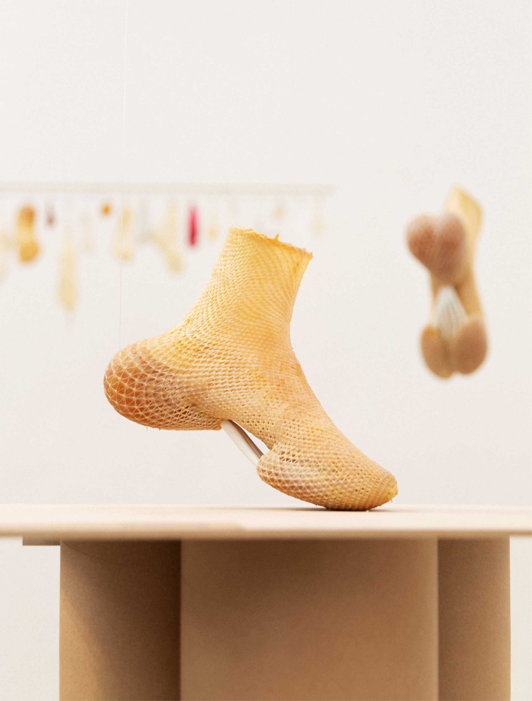
Rapid
Autografting
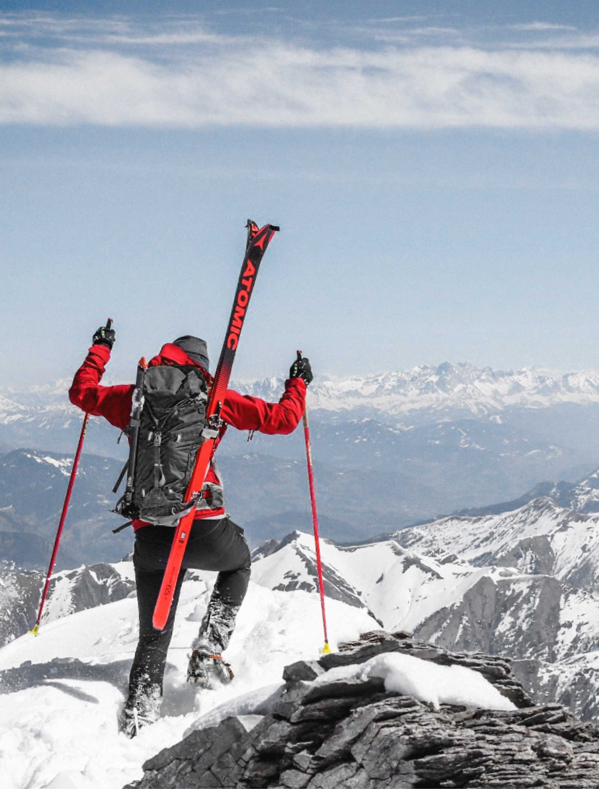
Atomic
Ski
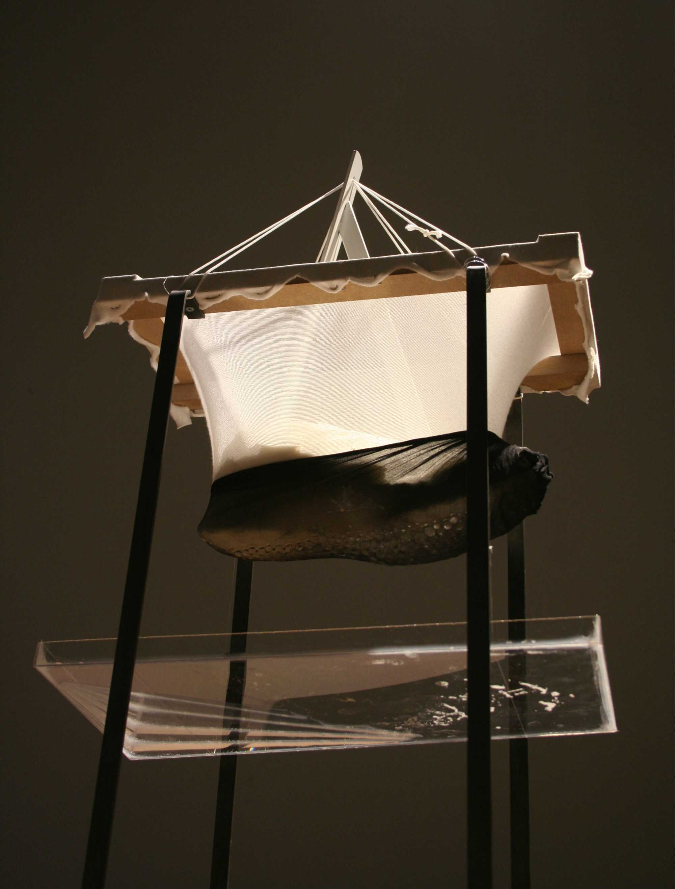
Heat &
Sweat
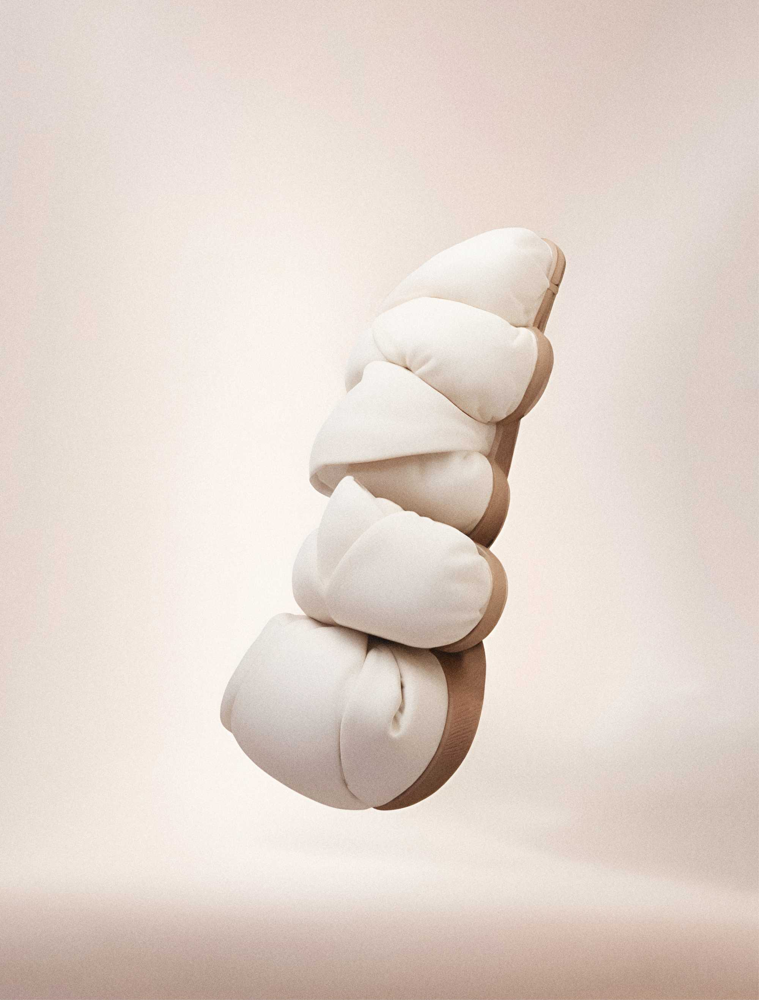
Grub
Slippers
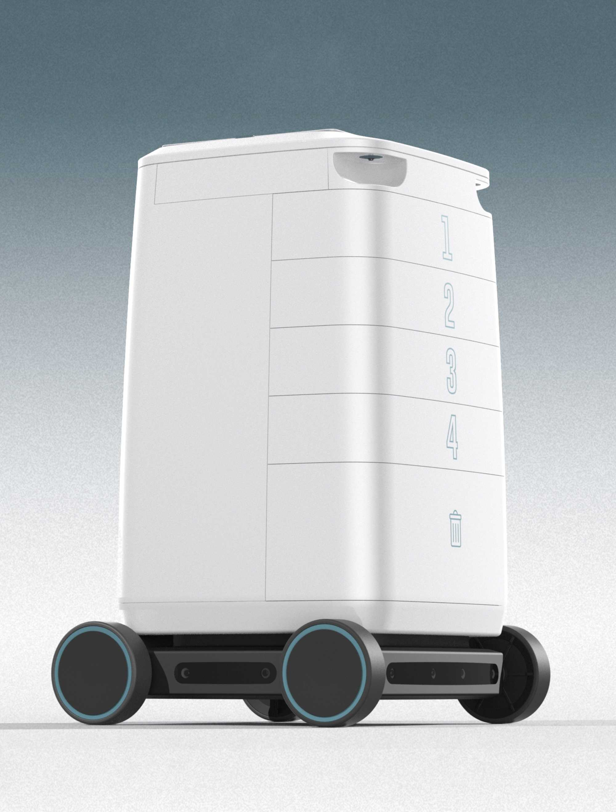
Medication
Trolley
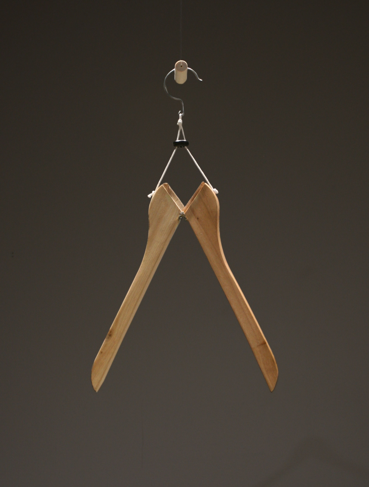
Hanger
Collapse
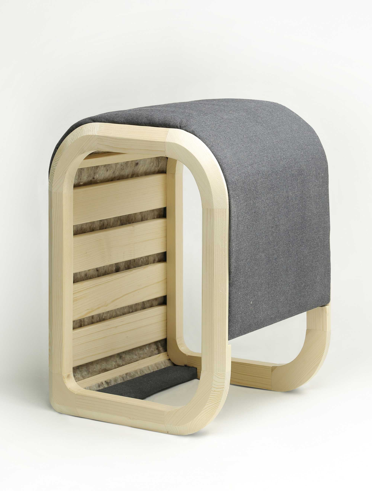
Multi
Frame
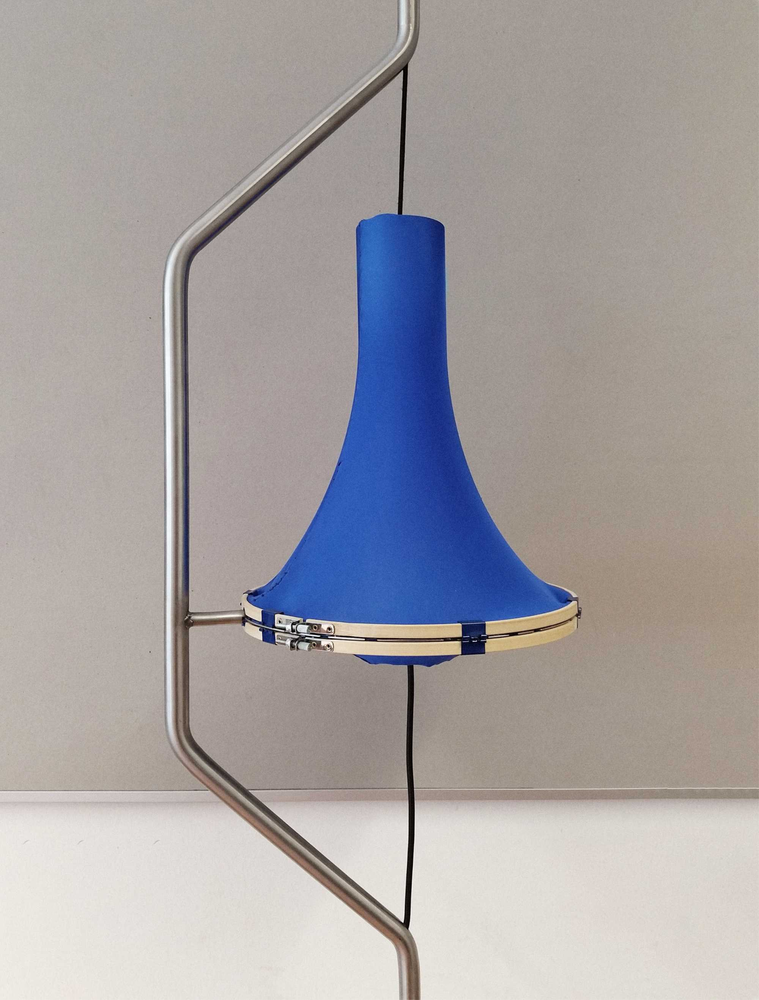
Tensora
Lamp
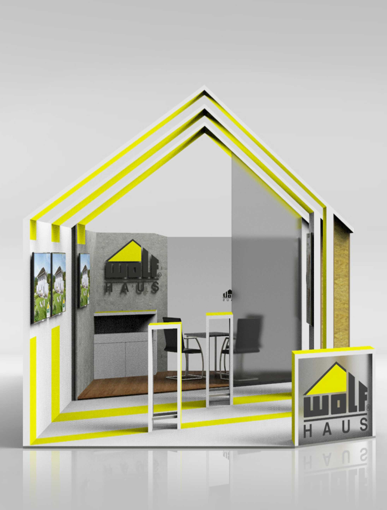
Wolfhaus
Booth
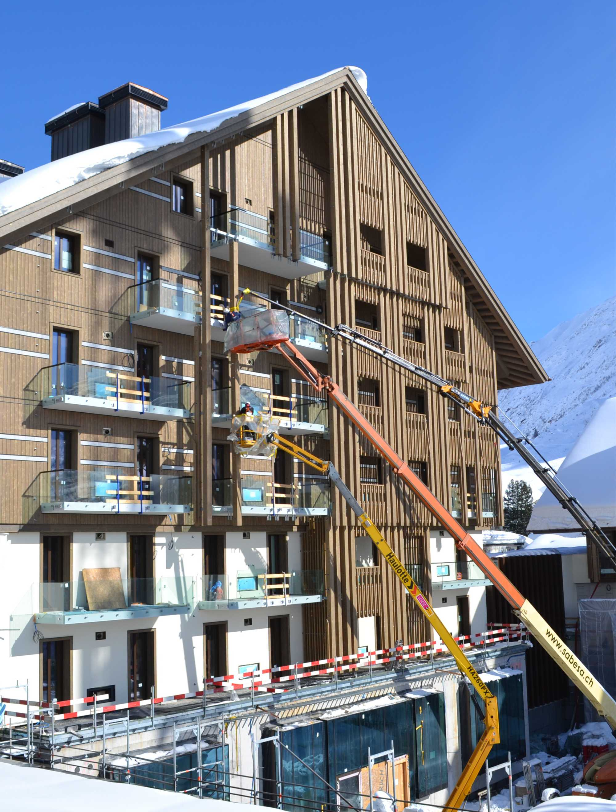
Voglauer
Hotel
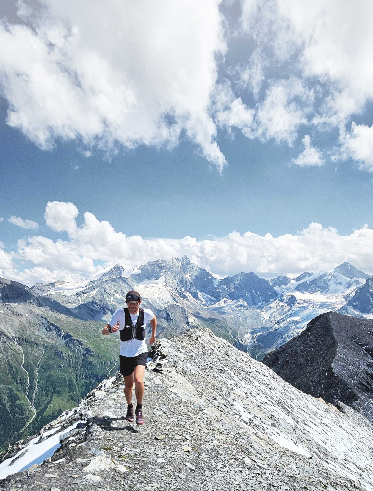
Ultra
Trail
‹
›
Zürich, CH